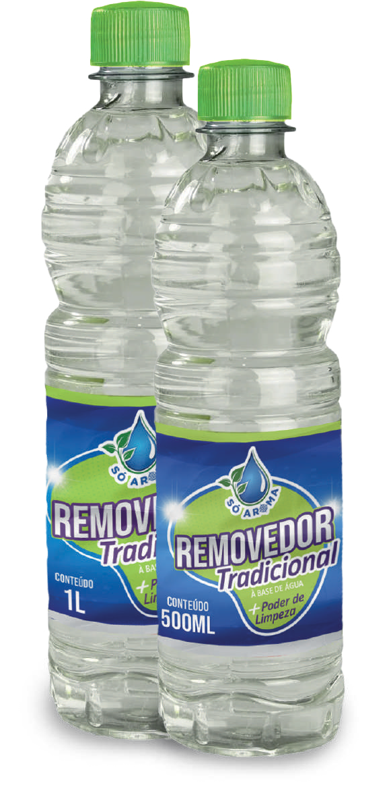

Removedor
O Removedor Tradicional é um produto versátil e eficaz, ideal para limpeza de superfícies diversas. Ele age de forma rápida, removendo sujeiras, manchas e até mesmo gorduras acumuladas. Além de ser fácil de usar, sua fórmula é potente, garantindo que a limpeza seja profunda e eficiente. Pode ser aplicado em pisos, azulejos, e outras áreas da casa, proporcionando um ambiente mais limpo e agradável.
Disponível em embalagens de: 500ml e 1L.
Downloads
